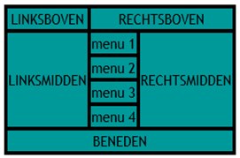

Tabellen opmaak
Tabellen hebben we uitgebreid geoefend. De HTML structuur daarvan moet inmiddels bekend zijn bij je. De opmaak ervan is net zo belangrijk. Daardoor wordt een tabel duidelijker en beter leesbaar voor de bezoeker van de website.
| Opdracht 1.1: Tabel opmaken |
|
Open in je editor opdracht6-2.html
Sla het bestand op als Opdracht13-1.html en opmaak13-1.css. |
In de CSS kan je elk html element opmaken. Een tabel bestaat uit <table>, <tr>, <td> of <th>. Deze elementen kun je dus ook in de CSS benoemen en opmaken. Zo kun je de hele <table> een achtergrond kleur geven, maar ook de <tr> of de <td>. Als je 1 specifieke cel anders wilt opmaken dan de rest, moet je een class gebruiken. Hier komen we in een later hoofdstuk op terug.
| Opdracht 1.2: Tabel opmaken |
|
Open in je editor opdracht13-1.html en opmaak13-1.css
Sla het bestand op als Opdracht13-1.html en opmaak13-1.css. |
| Voorbeeld 1 |
De afstand van de tekst ten opzichte van de rand kunnen we ook beïnvloeden. We weten inmiddels dat je dit met padding kan doen. Als je nu aan je CSS toevoegt padding:5px; wordt aan alle vier de kanten (boven, rechts, onder en links) 5px tussenruimte toegevoegd. Nou is de boven en onderkant niet echt nodig. Vooral de linker en rechterkant is van belang. Nou kun je padding-left en padding-right toevoegen, maar dit kan ook sneller.
Je kunt namelijk padding:0px 5px 0px 5px; toevoegen. De eerste 0px staat voor de bovenkant, de eerste 5px voor de rechterkant, de laatste 0px voor de onderkant en slaat de laatste 5px op de linker kant. Voor margin geldt hetzelfde.
| Opdracht 1.3: Tabel opmaken |
|
Open in je editor opdracht13-1.html en opmaak13-1.css
Sla het bestand op als Opdracht13-1.html en opmaak13-1.css. |
Tabelranden
De randen van een tabel zijn ook beïnvloedbaar. Bij de tabel uit de vorige opdracht hebben we de randen niet opgemaakt. Je ziet dat ze dan doorschijnend zijn en elke cel heeft een eigenrand. Dit kun je oplossen door in de CSS table de waarde van border-collapse:collapse; te geven.
| CSS Code | Werking |
| border | Alles over de randen aan alle kanten |
| border-bottom | Alles over de onderranden. |
| border-color | Kleur van de randen |
| border-collapse | Samenvoegen van de randen. |
| border-left | Alles over de linkerranden. |
| border-style | Wat voor soort randen. |
| border-right | Alles over de rechterranden. |
| border-top | Alles over de bovenranden. |
Net als bij de padding en margin kan je hier ook weer meerdere waardes achter border geven.
Zo geeft de code border:solid black 3px; een on doorbroken lijn met een zwarte kleur die 3 pixel dik is.
| Opdracht 1.4: Tabel opmaken |
|
Open in je editor opdracht13-1.html en opmaak13-1.css
Sla het bestand op als Opdracht13-1.html en opmaak13-1.css. |
| Voorbeeld 2 |
| Opdracht 2: Namaken | |
|
Probeer de tabel hiernaast zo goed mogelijk na te maken.
Sla het bestand op als Opdracht13-2.html en opmaak13-2.css. |
|
| Opdracht 3: Rooster namaken | |
|
Open opdracht6-4.html en probeer de opmaak van het rooster zo goed mogelijk na te maken
Sla het bestand op als Opdracht13-3.html en opmaak13-3.css. |
|
| Opdracht 4: Tabel namaken | |
|
Open opdracht7-2.html en probeer de afbeelding hiernaast zo goed mogelijk na te maken
Sla het bestand op als Opdracht13-4.html . |
 |